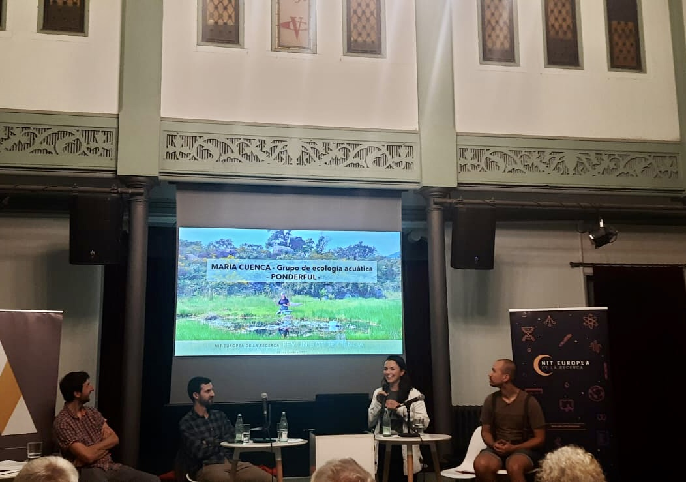

Maria Cuenca-Cambronero
Outreach
TV3 inverview
In August 2025, we had the opportunity to give an interview on TV3, where we highlighted the crucial role that ponds play in supporting biodiversity. Despite their importance as biodiversity hotspots and providers of key ecosystem services, ponds remain largely overlooked in conservation policies and lack specific protective measures. This leaves them particularly vulnerable to the pressures of climate change, land-use change, and human activities, which are causing many of these ecosystems to disappear at an alarming rate.
Through this interview, we hoped to raise awareness among the general public and policymakers about the urgent need to recognise and protect ponds as key elements of our natural landscapes. The interview formed part of the dissemination efforts of the PONDERFUL project
If you are interested to watch the entire interview, here is the link.

{kind=link}
{kind=link}
High School visit
For the International Day of Girls and Women in Science 2024, I had the pleasure of sharing this experience with my sister, an architect, another discipline where women remain underrepresented. Together, we presented our work and career paths to an audience of young girls and boys who were in the process of deciding their future studies. Unsurprisingly, many of the girls were leaning towards medicine and care-related fields, while the boys were more inclined towards engineering. Through our stories, we hoped to provide inspiring examples of women leading in two areas where female representation is still scarce: science and architecture.
{kind=link}
{kind=link}
{kind=link}
The European night
 The European Research Night is a public event dedicated to bringing science closer to society. Its goal is to showcase research, innovation, and the people behind it to audiences of all ages in an engaging and accessible way. In 2023, I had the opportunity to participate as an invited speaker, where I introduced the fascinating world of ponds under the framework of the PONDERFUL project. During my talk, I explained why ponds, despite often being overlooked, are essential ecosystems for biodiversity, climate change mitigation, and ecosystem services. I also highlighted the multiple benefits of their preservation, not only for nature but also for people, emphasizing how these small water bodies can play a big role in building more resilient landscapes.
{kind=link}
Interviews in the newspaper
Interview 1
Interview 1
Interview 1
SRUK association
In progress